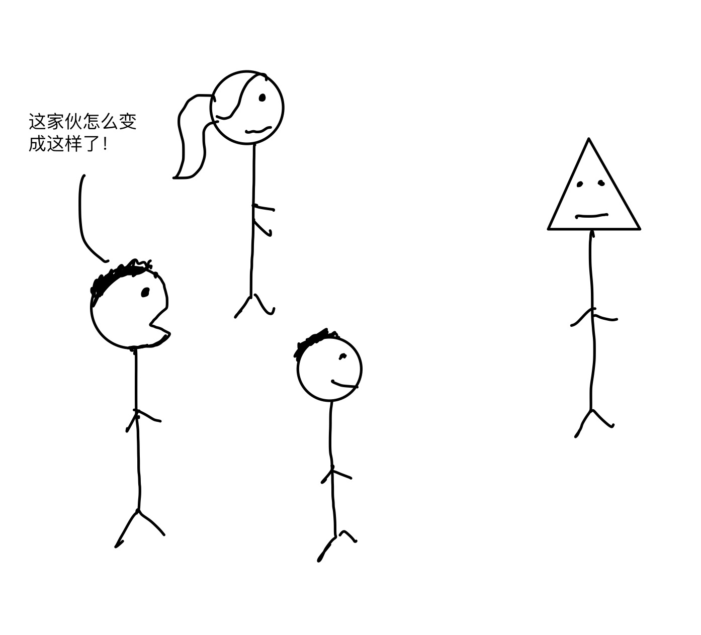
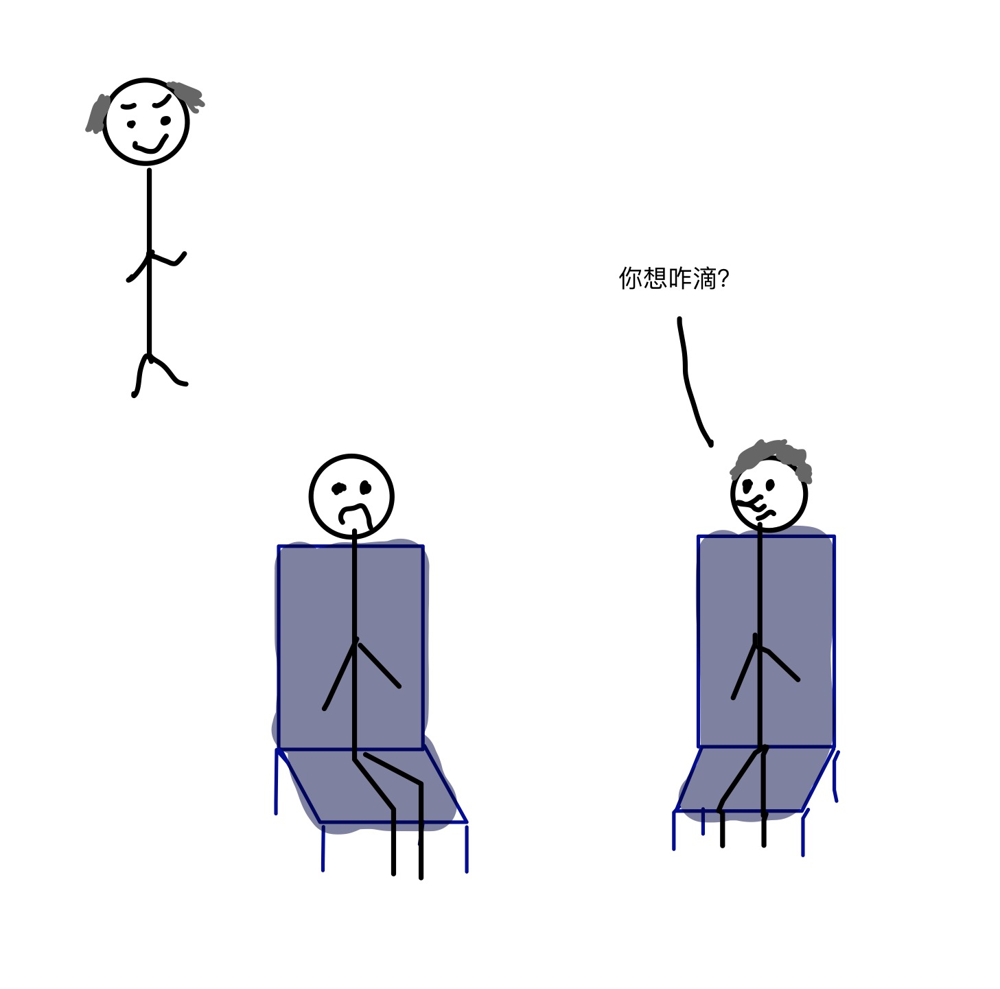
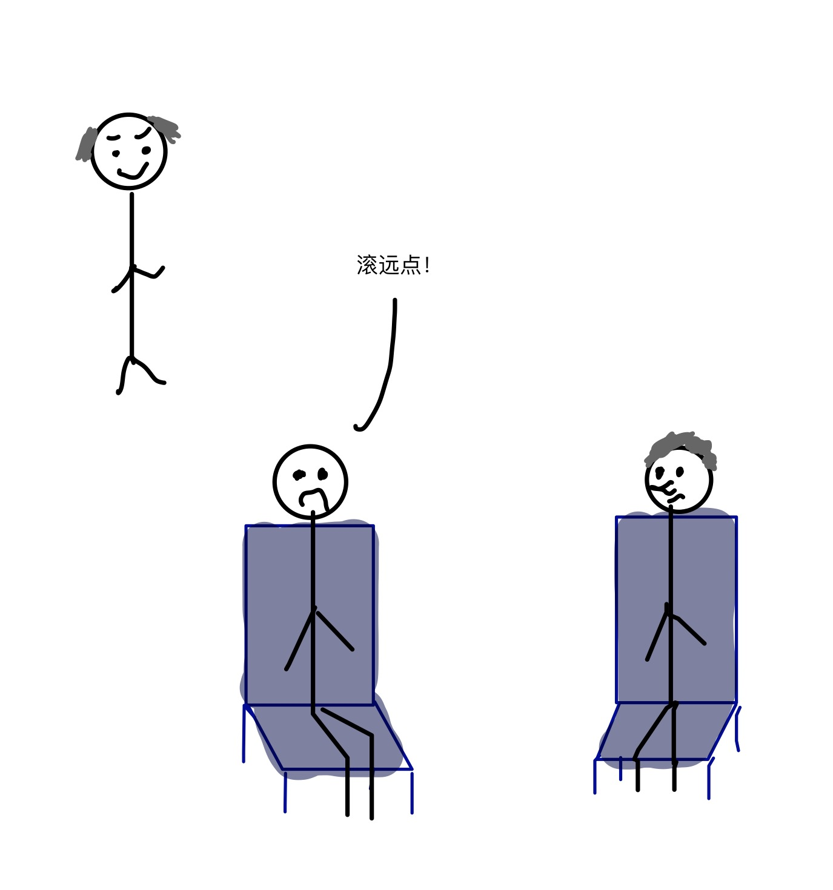
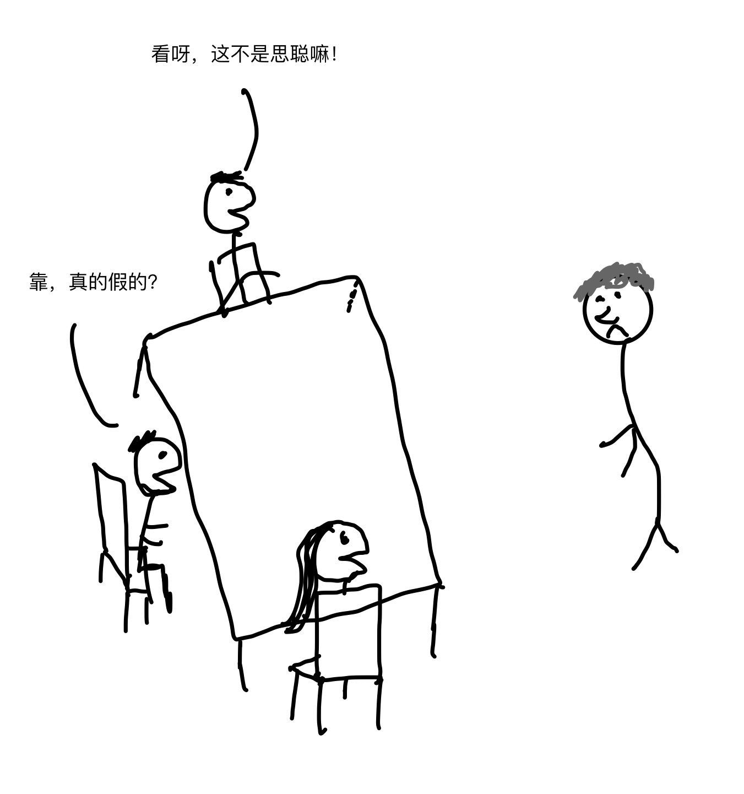
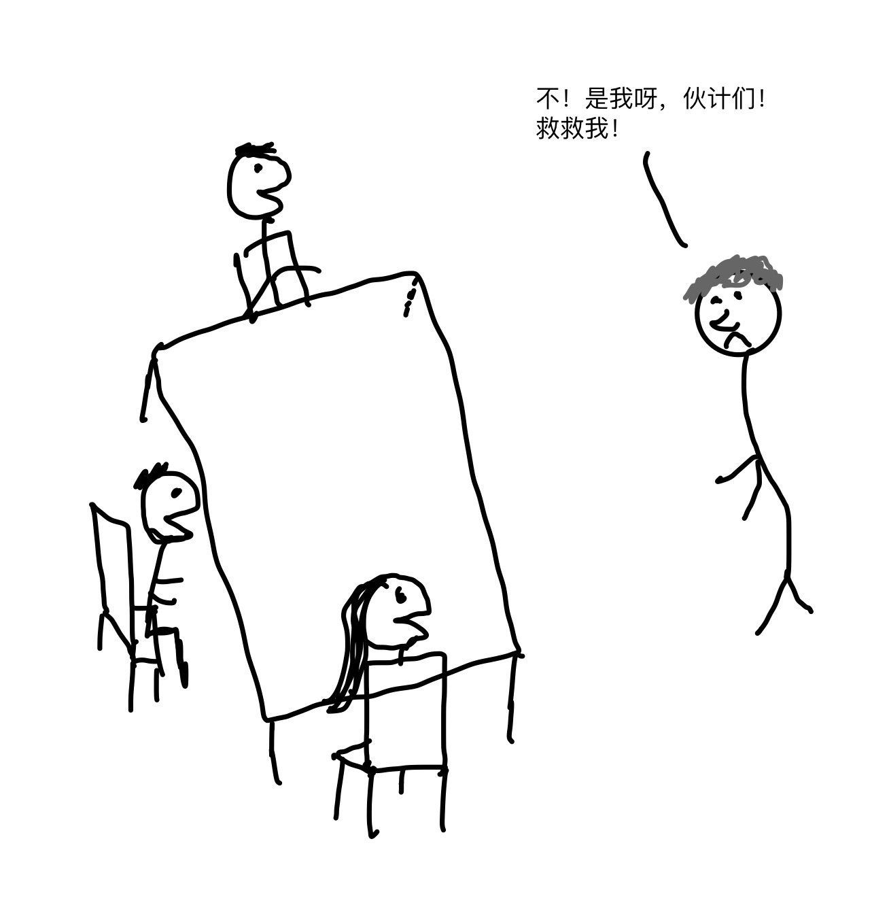
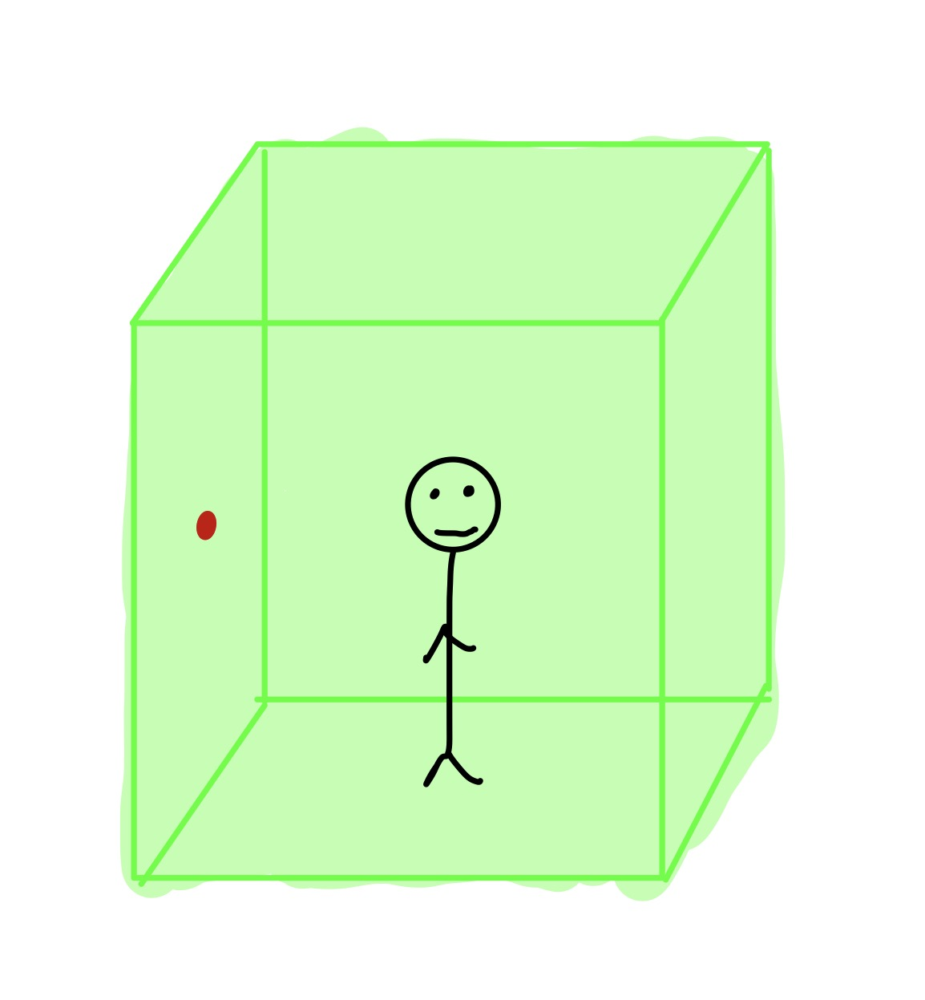
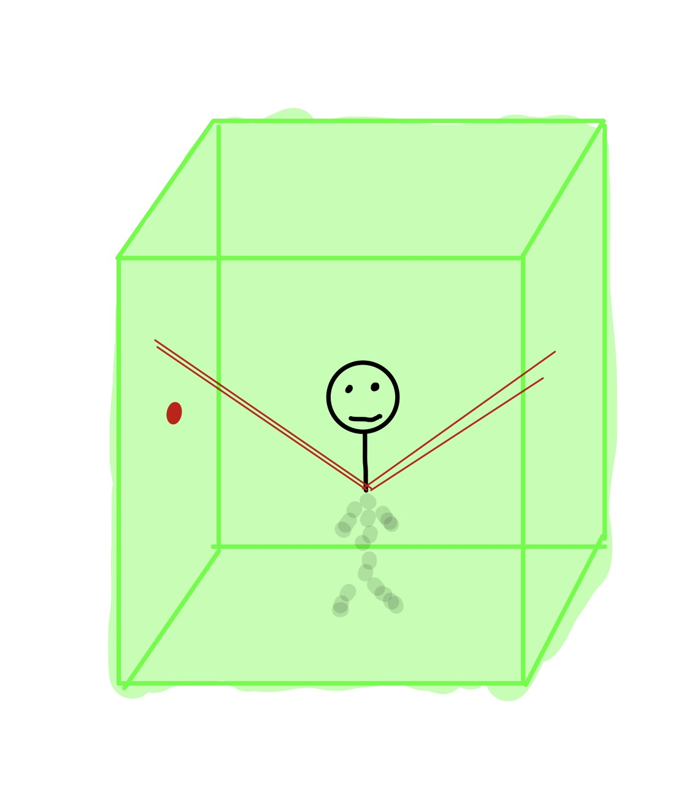
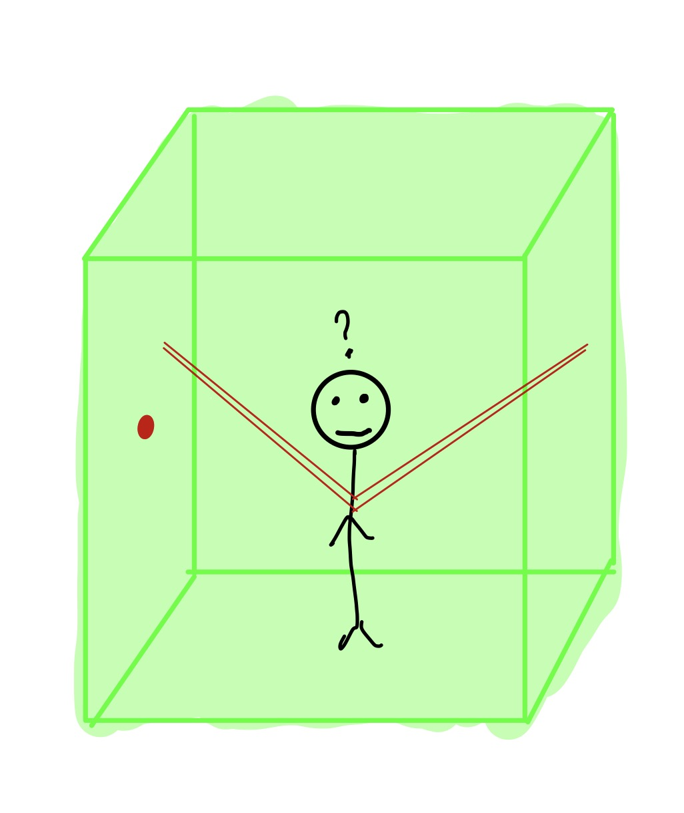
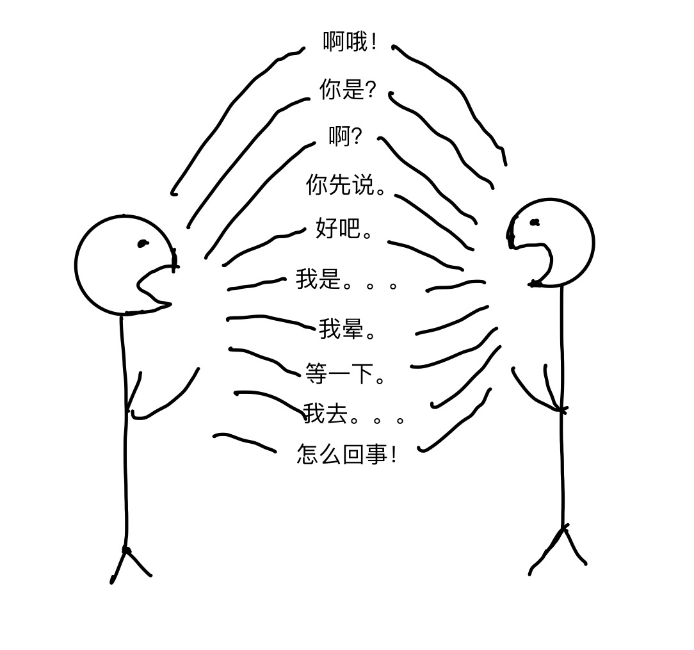
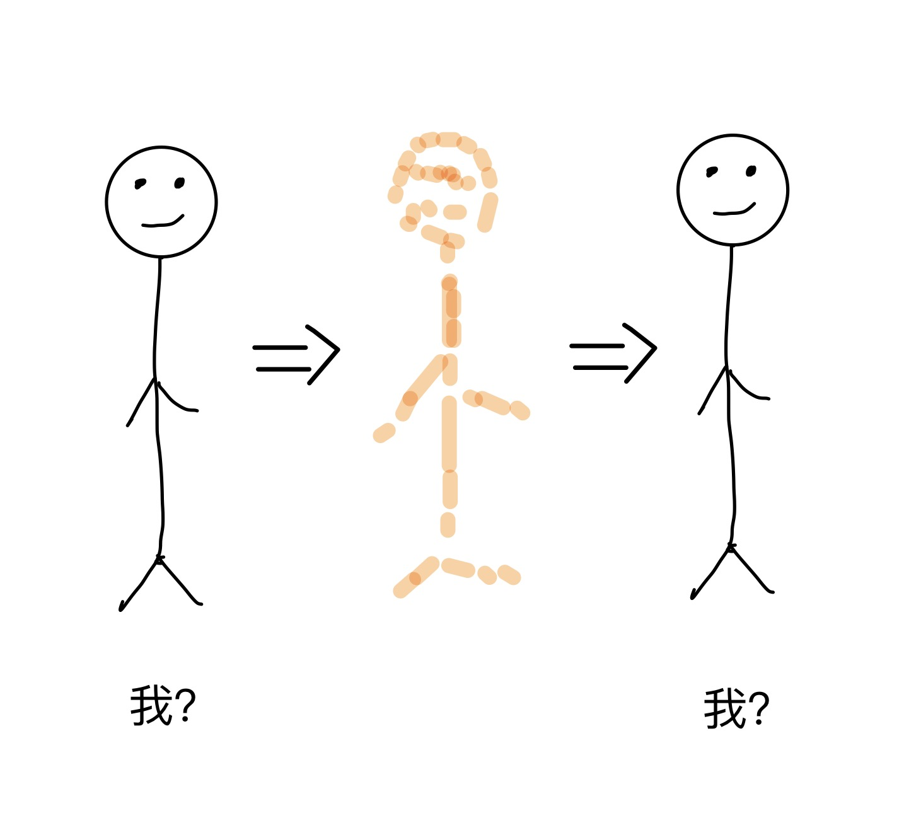

我们平日里说「我」的时候，几乎很肯定自己所表达的「我」的意思，而别人也完全可以理解这里的「我」。「我」或许是世间再简单、再清晰不过的词了，在你还是一岁的时候就已经可以理解什么是「我」。
我们或许都曾经困惑过「我是谁？」，只不过这其中困惑的重点在于「是谁」，对于「我」，则明显就是我们本人，毫无疑问。
可是，当我们静下心来仔细琢磨琢磨，「我」的定义真的那么清晰吗？我之所以是「我」 是取决于我的肉体，我的大脑，还是我的意识呢？今天 「我」就带着大伙一起来试着说道说道。
【肉体论】
大多数人公认最简单的判断一个人是谁的方法就是看他的样貌，也就是以一个人的外在身体为依据。因此，所谓的「肉体论」指的就是以我们的身体作为衡量我是「我」的标准，看上去合情合理。
根据这样的准则，无论我们的生活发生了什么，即便是归西了，我还是「我」，变成了尸体也还是「我」。就算像下图这样把自己的脑袋整成了三角形：

周围的人也只会认为是我们的样貌发生了一点改变，而并不会认为我不是「我」，因为我的身体这副躯壳无论改变成什么样，它都是「我」。虽然人们认为我们不只是一堆肉和骨头组成的，但归根到底，蚂蚁的身体就是蚂蚁，松鼠的身体就是松鼠，而我们本人就是我们自己的身体，这就是肉体论所持的观点。
我们来验证一下。
如果把我的指甲剪了，我还是「我」吗？我改变了自己的身体，抛弃了身体的一部分，是否这就意味着我不是我了呢？答案显然不是，我依旧是我。
如果我作了肝脏移植术呢？很大的一个手术是吧？但是显然，我依然是「我」，对吗？
再如果我真的病得不行不行的了，更换了我的肝脏、肾脏、心脏、肺、血液、五官，在做完这所有手术后，我重新变成了一个健康的人，那么我的家人会因为大多数器官都不是我自己的而认为我已经去世了吗？答案显然还是不会，我还是「我」，和这些器官是谁的没有关系。
那么是我的DNA决定了我是「我」吗？虽然做了这么多的器官移植，但是我的细胞里任然保留的是我自己的DNA不是吗？是这些DNA在维持着我的存在吗？如果是的话，我们如何解释DNA几乎完全相同的双胞胎？他们显然不是一个人吧？我是「我」，我的双胞胎兄弟姐妹则是另外一个人，所以DNA的解释也行不通。
因此，我们发现，肉体论看起来并不是十分的科学，我们不断地替换掉身体的零件，然而，我始终是「我」！
那么假如我们在大脑上作作文章又会怎样呢？
【大脑论】
设想一下有一个疯狂的科学家，把你和思聪锁在同一个房间里。

随后这家伙给你们俩做了个「小」手术：麻醉、开颅、交换大脑、缝合、唤醒。你惊奇地发现，你竟然不在自己的身体里，而你自己的身体则坐在你身边，控制它的竟然是思聪的大脑。

那么现在这种情况下到底哪个是你呢？
按照我的理解，拥有你意识的才是你，只不过你现在控制的是思聪的身体罢了。不过接下来的日子里，你的麻烦事或许是要和周围所有的人解释清除发生了什么。


我们也可以换个角度理解，当移植大脑的时候，移植的并不是大脑而是身体。你还是可以感受到自己的存在，只是存在的是不同的身体而已。当然，与此同时，你的身体也不能称为你了，他是思聪。那么，你之所以为你的关键看来取决于大脑。「大脑论」的观点就是我的大脑在哪「我」就在哪。
【数据论】
我们在来考虑这样的情况。
还是刚才那位疯狂的科学家，这一次他并不直接交换你和思聪的大脑，而是通过外接设备的手段，把每个大脑里保存的所有信息和数据下载下来，之后清空两个大脑，再把从你大脑里下载的数据上传到思聪的大脑，把思聪大脑里的数据上传到你的大脑。当你们俩再一次醒过来的时候，你们所有的物理组成都没有改变，只是你还是会感觉自己在思聪的身体里，因为此时思聪的大脑拥有了你所有的思维、记忆、恐惧、希望、梦想、情绪和个性。同样，你还得去说服你的家人和朋友，在思聪身体里的确是你。
这是一种新的理论，我们称之为「数据论」，数据论的观点是我之所以是「我」并不取决于我的躯体（包括大脑），决定我的是我大脑里的数据，比如我的记忆、个性等等。
有了以上这些理论，我们会感到些许困惑，那么我们就需要想些办法来弄清楚。验证一个理论是否正确的一个比较好的方法就是用各种能想到的具体场景来验证它。下面就是一个比较有意思的试验，由英国哲学家Bernard Williams提出。
【拷打试验】
情形一：和上面的例子一样，疯狂的科学家交换了你和思聪大脑的数据并唤醒你们之后，走到思聪的身体边上，实际上这时候你的意识在这个身体里，问道：「我现在要拷打你们其中的一个，你选谁？」
你会怎么选？你或许会指着自己的身体说「他」，也就是如果你相信「数据论」，那么你算是做了一个正确的选择。你的一切意识都在思聪的身体里，还在乎之前那个身体做甚？所有人都不想遭受折磨，为什么不选别人呢？
情形二：疯狂的科学家这次依然绑架了你和思聪，在他还没有动手给你们做任何手术之前，他走到你面前，此时的你依然是原始状态的你，拥有自己的身体、大脑和意识，然后郑重的问出同样的问题。你们的对话如下：
疯子：接下来我要拷打折磨你俩中的一个，你选谁？
你：「指向思聪」他！
疯子：好的，那在我动手之前，我会清除你们俩的记忆，因此，在我折磨你们当中任何人的时候，你们都不会记得你们是谁，你要改变主意吗？
你：不改，弄他！
疯子：还有，在动手之前，我不仅要清空你们的大脑，我会重建你大脑里的信息，让你认为你是思聪，你会拥有他所有的意识和感觉，同样我会让他认为他是你。你要改变主意吗？
你：嗯～还是不改！
因此，面对情形一，你选择的是折磨你自己的身体，而面对情形二，你选择的是揉磨思聪的身体。但是实际情况是两种情形是一样的。在拷打发生前，思聪大脑里的所有数据都被转移到了你的大脑，只不过是疯子科学家提问的时机和需要你选择的时间节点不同而已。两种情形下，你的目标都是要让受折磨的不是自己，情形一你认为在大脑数据交换之后，你已经在思聪的身体里了，而对你来说这个身体拥有了你的意识，而在情形二你则不在乎两个大脑数据发生的变化，你相信你自己仍然存在于自己的大脑和身体里。
在情形一选择自己的身体被拷打是对「数据论」的印证，你相信形成你意识的数据在哪你就在哪；在情形二中选择「思聪」的身体被拷打是对大脑论的印证，你相信无论对方对你的大脑做了什么，你依旧存在于自己的身体里，因为你的大脑就在这里。而如果疯子科学家说要把你们俩的大脑进行交换，而你依旧选择拷打思聪的身体的话，说明你相信的是「肉体论」。
不知道对于这个试验你们会有什么样的看法，我感觉还不是特别的严谨。接着我们再来看看现代哲学家Derek Parfit提出的瞬间移动试验。
【瞬移试验】
时光飞逝，转眼人类来到公元2700年，此时的科技已经发达到我们现在这些人无法想象的地步。其中有一项技术就是瞬间移动，实现的是以光速传送自己的身体。下面是具体的实施步骤：
首先进入出发装置，一个电话亭大小的房间。

接着只需要选择你要去到的地点，比如我在上海，想要去到的地方是北京，随后按下墙壁上的按钮，装置开始扫描并分解你的身体，过程中会记录所有组成你身体的原子级物质及其位置的精确信息，最后将包含这些信息的数据上传。

当扫描和分解完成之后，出发装置里面是空的，而所有的这些数据已经被传送到位于北京的某个接收装置，在这里，所有构成我身体的物质早已就绪，接收装置需要做的就是用收到的数据来还原我的身体。还原成功后，我将走出接收装置正如我走进上海的出发装置一样，一样的心情，一样的感觉，甚至于我早上手指被纸张割破的伤口也一样存在。
从在上海的我按下按钮开始分解和传输我的身体，直到我从北京的接收装置走出来，当中可能经过了几分钟的时间，而在我看来只是一瞬间。
在2700年，这是人们日常非常普遍的出行方式，所有人都可以瞬间移动，这样的方式不仅迅速，而且安全。
直到有一天，我依然兴高采烈的进入到出发装置，按下按钮，准备去北京上班，我也听到扫描机开始工作了，但是我发现我的身体并没有被分解。

当我走出出发装置的时候，当然，我还在上海。于是我找到工作人员，告诉他们出发装置故障了，想换一台使用，因为我要赶着去北京开会呢，我可不想迟到。
而工作人员看了看设备的传输日志，说 「看起来我们的扫描装置没有问题，搜集了您的所有数据，但是分解装置有点故障，因此没有在扫描的同时将您分解。」
「不！」我解释道： 「这样肯定不对啊，你看我人还在这呢，而且我上班要迟到了，你们可以给我另一台设备使用吗？」
工作人员随后给我看了从北京传过来的实时视频：「你看，你已经在北京了，看起来你并不会迟到。」的确，从视频里，我看到了已经在北京办公室的我。
「不，这不是我」我说： 「我还在这里呢！」
这时候工作人员说 「嗯，看起来我们的机器的确是有一点瑕疵，现在可以做的就是单独启动另一台机器的分解装置把在这里的您分解掉就可以了。」
虽然分解自己的身体每天都在进行，但是现在在我看来事情有点恐怖了。
「等等，不行，我不想被分解，分解了我就死了！」
工作人员解释道 「你并不会死先生，你自己已经看到了，你现在在北京呢，你活得好好的。」
「但是这不是我，这只是我的一个复制品，站在这里的才是真的我！你不可以分解我！」
「对不起先生，根据法律，我们得将您分解，原则上我们不允许在出发装置分解身体之前在接收装置里合成身体。」
于是，我想逃跑，很可惜，拦住我的是两个人高马大、全副武装的保安，他们强行把我送上了分解装置。
你或许和我一样，在故事一开始听说实现瞬间移动的时候感觉到激动和兴奋，而听到故事的结尾你会觉得事情并不是那么美好。
故事所引发的思考是「类似这样的瞬间移动，到底是一种新型的交通方式，还是一种死亡、重生的方式？」
故事的开头让人觉得这种瞬间移动是一种很棒的交通方式，而故事的结尾则显然需要弄死一个自己。虽然我或者说我的一个复制品仍然完美的生活在北京，下了班还可以瞬间移动回到家里和老婆聊聊天，亲热亲热，而我又怎么能肯定和我在一起的老婆还是原先那个老婆，而不是在几分钟前复制出来的呢？
问题还是要回到到底 「我」是由什么决定的。相信「数据论」的人会认为我还是我，活在北京的那个就是「我」，因为我的意识都在。而想到在上海的我即将遭受的恐怖处置，谁又能因为自己的另一份复制存在于世上而甘愿被分解呢？更进一步，假如同时可以在北京以外的另外50个地点还原出50个我，那么，怎么论证哪一个才是真正的我呢？我们应该分解哪一些而留下哪一个呢？对于我来说，这种情况下「数据论」也站不住脚了。
这个结果对「肉体论」和「大脑论」来说是一个正面的支持，但是我们先不下结论，我们再来看一个试验。
【大脑分享试验】
有一个很酷的事实是人类的大脑是分左右的，正常情况下左右大脑各施其职，负责日常生活中的不同功能，但是当你移除某人一半的大脑，那么剩下的一半可以渐渐的学会另一半的功能，这个人还能正常的生活。听上去不可思议吧，但这就是事实。
假设你有一个苦命的双胞胎弟弟，因为一场意外大脑遭到了重创，无私的你决定贡献出你一半的大脑。技艺高超的医生给你们俩同时做了手术，把你的一半大脑换到了他的脑袋里。当你醒来的时候，你觉得和平常一样，你还是你。而你弟弟随后也将带着你的记忆和性格醒来。

这时候你突然意识到，你弟弟已经知道了你的所有隐私，于是你想要告诉他，让他替你保密，有些事情不能和其他人说，当你正要开口时，你又发现其实你根本没必要说，因为他已经不是你弟弟了，他的意识现在就是你的意识，你认为的那些隐私也就是他认为的隐私。
你看了看身边的弟弟，想到在他身体里的不是他自己的大脑，而是你的，你会十分的惊奇， 「为什么我现在还是在自己的身体里醒来，而不是在弟弟的身体里？弟弟的大脑是我的大脑的一半，为什么现在我只能意向思考，而不能同时从我们两个人的角度进行两份思考？不管我的哪一部分在弟弟的脑袋里，为什么我无法与其进行直接的交流？在弟弟脑袋里的我是谁？当我还在我自己身体里的时候，另一半在弟弟身体里的我在思考着什么？」
「大脑论」现在看来已经掉链子了，如果人们人为大脑在哪里人就在哪里，那么，像这种一个大脑分别位于两个不同身体里的情况怎么解释得通？已经被瞬间移动试验打败的「数据论」也没办法很好的解释这种情况。
而「肉体论」，在一开始看上去就被否定的理论，在这里突然看上去变得最靠谱了。肉体论的观点是 「你当然在你自己的身体里醒过来咯，你之所以是你就在于你的身体，你的大脑只是你身体思考的工具而已，你的弟弟不是你，他还是你弟弟，只是一个拥有你的意识的弟弟。」
所以，这个试验看上去印证了「肉体论」，但是我们接着往下看。
在瞬间移动试验中我们得到的结论是，如果你大脑的数据被传输到另外的大脑，即便那个人从根本的物质组成上和你一模一样，也只不是复制了一个你，一个和你完全一样的你，这个你和原先的你还是有区别的，当你在别的地方被复制、重建和还原出来的时候，少了可以认定是你的关键因素。
而「肉体论」也会认为通过采用别的物质还原出来的你其实已经不是你原先的肉体了，所以是否在这一点上「肉体论」也可以解释得通呢？
让我们接着进行两个试验。
【细胞替换试验】
如果我将你身上的一个细胞替换成一个完全一模一样的人造细胞，你还是你吗？相信答案是肯定的，你还是你。如果我持续这个动作，更换1%的细胞呢？10%？30%？60%呢？在瞬间移动中，最后构成你的细胞被100%的替换了，根据肉体论我们认为这已经不是你了，那么这其中的界限在哪？多少细胞被替换了可以说你已经不是你了呢？
即便是我们把你身体的所有原子都替换了一遍，只要我们可以用100%完全一样的原子来替换，没有人看得出差异，更不会有人认为你是死过一次而再生的复制人吧？
【身体分解试验】
假设我们走到一个分解装置里，可以瞬间将你分解成原子形态，随后再用这些原子重新还原出原先的你。

那么这个人还是你吗？ 在分解的过程中你算是死过一次而重新还原的只是你的一个复制品吗？看上去用的原始材料还是你自己身上的，这和瞬间移动的还原过程中所采用的另外的原料有所不同，但是你觉得你向上的氢原子和其它氢原子有何不同吗？探究到原子级别的时候，这些物质之间是你身的还是从别处取来的有区别吗？那么我们既然认为瞬间移动之后的你并不是你，而是一个复制品，现在这种情况下的你难道不也是个复制品吗？
这两个试验所要强调的是，区别你是不是你的关键并不是组成你的那些物理的成分。细胞替换试验可以看出你可以循序渐进的替换掉你身体的物质而你仍然是你，而身体分解试验可以看出当你被完全分解并还原之后和瞬间移动试验中还原出来的你并没有差异。看起来肉体论的确也不是很靠谱。
而这些试验揭示出的一个关键性是「连接」，之所以在细胞替换试验中，你还是你，是因为我们是一点一点连续的替换身体的里的物质，原先的你和100%细胞被替换的你始终是连接在一起的，而在身体分解试验和瞬间移动试验中，我们都是一次性完全分解，然后又重新还原合成的，这当中看上去有明显的断层，也正因为如此，单独把肉体分解过程拿出来看，就会像是谋杀了。
那么我们之前的这些理论是不是都找错方向了？我之所以是「我」，并不取决于任何一个部分，不取决于身体，不取决于大脑，也不取决于意识数据？在任何分解，转移，还原的过程中我都将不是「我」，因为你我本不是由这些东西决定的，决定我的是一个长期的连续的存在的状态。
【延续性】
几年前，在我已故祖父90岁的生日上，已经和老年痴呆抗争多年的他，指着墙上一个五六岁小朋友的照片说「瞧，这是我。」
毫无疑问，他是对的，然而，要是没有人告诉你，你很难把面前的这位垂垂的老人和墙上活泼的小男孩联系在一起，这两者几乎看不到任何的相似之处。而本质上，这两者其实也大不相同了，这个六岁男孩身上的细胞，在过去的几十年，早就陆陆续续都死掉了。而显然两者的意识和个性也有很大的差距，他们之间也很少有相同的大脑和大脑里的数据了，可以说，街上任何一个八九十岁的老爷爷的思维相比这个六岁小孩都更类似于我祖父。
但是，这里我们要强调的不是类似，而是延续。如果说类似可以决定我是谁的话，那么没有人会比上文所说到的试验中复制出来的我和「我」更类似了。我的祖父和墙上的六岁小孩共享的是其他地球上所有人都没有的东西–他们两者之间有着密不可分的延续性，在过去的几十年未曾中断过。
一位90岁的老人或许已经无法回忆出自己6岁时候的任何事情，但是他或许知道大多数89岁时候发生的事情，而89岁的他也能清晰的了解85岁的自己，50岁的时候清晰的记得三四十岁的情形，而7岁的他完全了解6岁的自己。这是一个相当长的记忆链条，个性和习惯在漫长的时间中连续地演化着。
就好比你拥有一艘木船，随着年复一年的使用，你会维修它，更换它的零件，替换坏掉的木板，直到有一天，你发现整艘船已经没有一处是当年最早的那艘留下来的了，那这还是你的船吗？假设你在买回来的那天给木船起名为「旺财」，那么现在你是不是要给它重新起个名字呢？
因此，我之所以是「我」，不取决一任何一个单一的故事，章节或者主题。「我」就像是一个堆放着各种各样杂物的房间，里面有旧的、新的、了解的、不了解的事物，而这个房间和里面的这些杂物每时每刻都在不停滴地发生着变化。
同样，我之所以是「我」，也不取决于我大脑和大脑里存放的数据信息，「我」是一个特别的数据库，数据库的内容不断的发生着改变：增加、删除、成长、更新。我之所以是「我」，也不取决于构成我的细胞、分子、原子，我只不过是一部组织和处理这些所有物质的使用说明。
人们经常会提到灵魂，但是我从来无法清晰的认识到底人们谈论的灵魂指的是什么。在我看来，灵魂，是大脑内在感官的一种外在说法；又或许是让人们相比生物学上的基本定义更具灵性、更显高贵的形容；有或者是想要宣称我们是永恒的。但是不可否认，人们常说的灵魂，可以很轻易的被理解为我90岁的爷爷和照片上6岁小孩的连接。无论身体里的细胞或者是记忆来来去去，无论是你小木船上的木板换了一波又一波，把他们和先前的自己联系在一起的就是灵魂。
在这篇文章从物质和意识两个角度剖析了之后，我们最终得到的答案或许可以称为「灵魂论」。
理论上，文章到此可以结束了，决定你之所以为「你」，我之所以为「我」的关键就是灵魂。但是我并不是非常认可这样的灵魂论，太过的虚无缥缈。在思考了瞬间移动试验那样，复制出一个完全一摸一样的自己；思考了把自己的大脑或数据和他人进行交换；思考了有一天自己或许会悄悄的死去，却又以另一个自己的复制版本醒来继续生活的场面之后，我越发的感到不安。我发现，我现在真的不知道什么是「我」了。